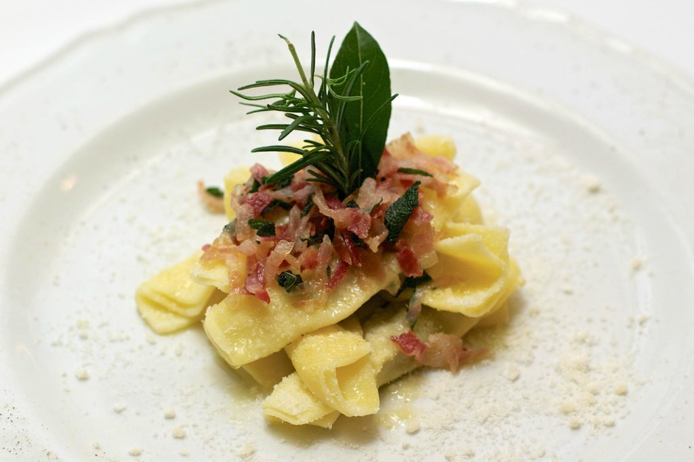
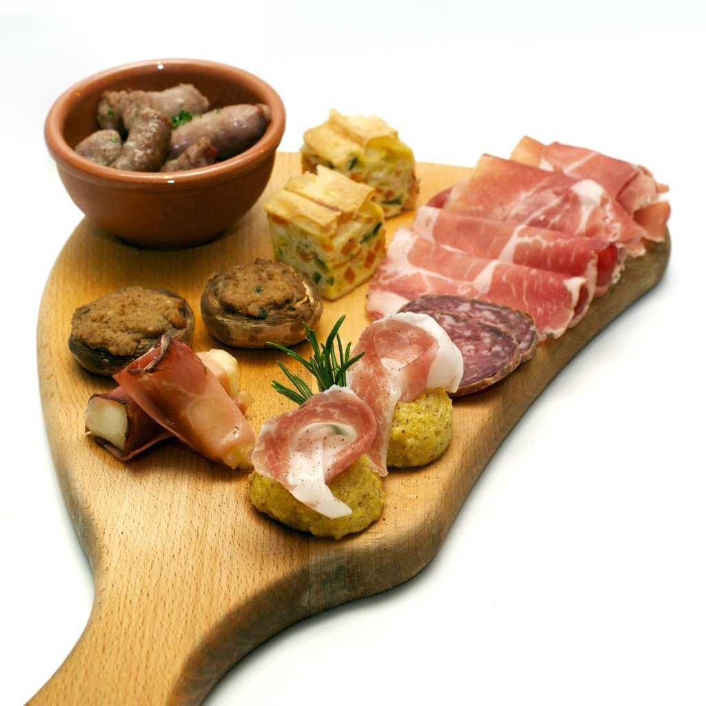
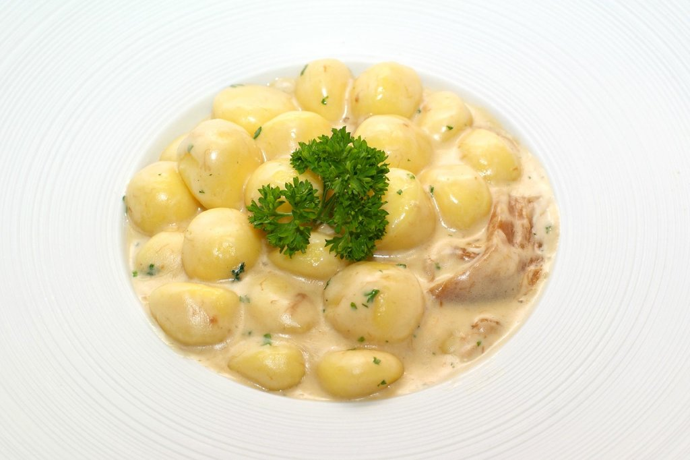
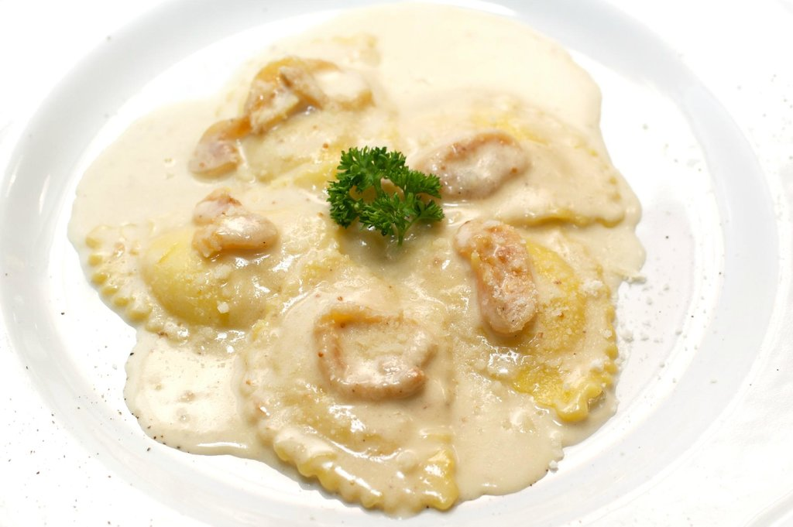
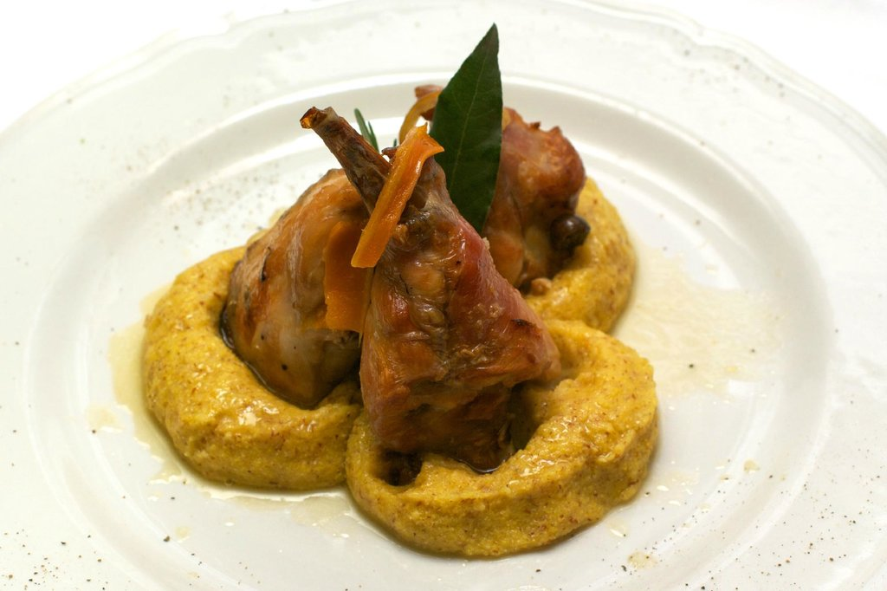
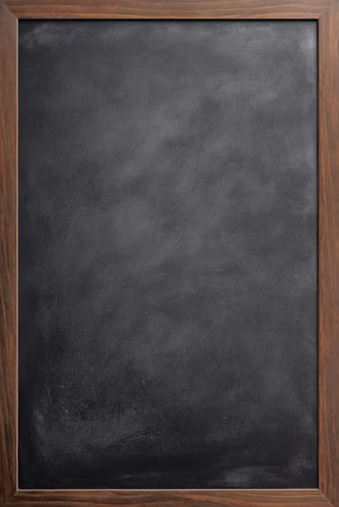

La cucina di una volta,
a due passi da Bergamo.
Proponiamo una cucina tradizionale bergamasca, fatta di poche materie prime, scelte con cura tra le realtà del territorio, ricette di famiglia e stagioni rispettate.
Si consiglia la prenotazione
Dalla nostra cucina
Piatti del territorio, materie prime di stagione. Le proposte cambiano con la stagione e con l'annata, ma i grandi classici ci saranno sempre...
-

Casoncelli alla bergamasca
La pasta fresca ripiena simbolo della città, burro fuso, pancetta formaggio e salvia.
-

Il tagliere della tradizione
Salumi nostrani, polentina calda, salsiccia e stuzzichini di stagione. Da dividere, per cominciare al meglio.
-

Gnocchi panna e porcini
Gnocchi morbidi avvolti in una crema di panna, funghi porcini e prezzemolo fresco.
-

Ravioli Taleggio e Fichi
Pasta ripiena in una delicata crema di Taleggio e Fichi.
-

Coniglio alla bergamasca con polenta
Coniglio nostrano a lenta cottura, adagiato su un letto di polenta rustica.

Menù del giorno · Lun–Sab a mezzogiorno
Il pranzo di casa
€12
tutto compreso
- Primo a scelta
- Secondo a scelta
- Piccolo dolce
coperto · acqua · un quartino di vino · caffè
A mezzogiorno
Fermarsi a pranzo, come una volta
Ogni giorno, da lunedì a sabato, prepariamo un pranzo completo: un primo, un secondo e un piccolo dolce, con l'acqua, un quartino di vino e il caffè. Nessuna carta lunga da studiare, solo quello che offre la stagione.
È il pasto di chi lavora e di chi ha voglia di essere coccolato, senza spendere una fortuna. Dodici euro, tutto compreso.
Il gusto delle nostre valli
Bergamo è la Cheese Valley: nessun'altra terra d'Italia conta così tanti formaggi a Denominazione di Origine Protetta. Sulla nostra tavola arrivano ogni giorno, insieme alla polenta taragna e ai vini di queste colline.
formaggi DOP
- Formai de Mut
- Taleggio DOP
- Branzi DOP
- Strachitunt DOP
Dalla cantina
- Valcalepio DOC
- Patrizio IGT
- Elogio IGT
- Luna Rossa DOC
- Caminella DOC
Cosa dicono di noi
- 4.6 Tripadvisor
- 4.5 Google
- 4.7 Facebook
-
★★★★★Ittolino
Proprio la trattoria che cerco nei miei viaggi, semplice, personale cordiale e con piatti tipici. Abbiamo mangiato benissimo spendendo il giusto.
Cuneo, Italia · 344 contributi Tripadvisor
-
★★★★★Matteo O.
Sono stato più di una volta in questo ristorante fuori dai circuiti turistici. Ogni volta è stata un'esperienza gastronomica eccezionale. Proposte sempre interessanti e di alto livello. Personale molto preparato e sempre gentile. Consigliatissimo.
Roma, Italia · 156 contributi Tripadvisor
-
★★★★★Roberto
Vengo spesso in questo ristorante quando sono in Italia. Il menù del pranzo è eccezionale: diverse scelte di primi e secondi. Ve lo consiglio vivamente.
Local Guide · 81 recensioni Google
Vi aspettiamo a tavola
Si consiglia la prenotazione.
Chiama e prenota 035 412 5228- Dove
- Via San Carlo, 4
24010 Sorisole (BG) - Orari estivi (giu–ago)
- Menù lavoro
Lunedì – Sabato a pranzo - Orari invernali (set–mag)
- Menù fisso: Lun–Sab a pranzo
Alla carta: Ven e Sab sera, Dom a pranzo
Consultare gli orari aggiornati su Google